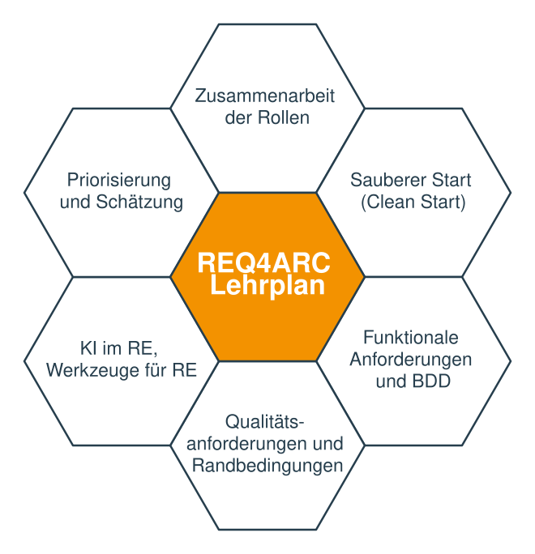

Lizenz und Copyright
© (Copyright), International Software Architecture Qualification Board e. V. (iSAQB® e. V.) 2026
Die Nutzung des Lehrplans ist nur unter den nachfolgenden Voraussetzungen erlaubt:
-
Sie möchten das Zertifikat zum CPSA Certified Professional for Software Architecture Foundation Level® oder CPSA Certified Professional for Software Architecture Advanced Level® erwerben. Für den Erwerb des Zertifikats ist es gestattet, die Text-Dokumente und/oder Lehrpläne zu nutzen, indem eine Arbeitskopie für den eigenen Rechner erstellt wird. Soll eine darüber hinausgehende Nutzung der Dokumente und/oder Lehrpläne erfolgen, zum Beispiel zur Weiterverbreitung an Dritte, Werbung etc., bitte unter info@isaqb.org nachfragen. Es müsste dann ein eigener Lizenzvertrag geschlossen werden.
-
Sind Sie Trainer oder Trainingsprovider, ist die Nutzung der Dokumente und/oder Lehrpläne nach Erwerb einer Nutzungslizenz möglich. Hierzu bitte unter info@isaqb.org nachfragen. Lizenzverträge, die alles umfassend regeln, sind vorhanden.
-
Falls Sie weder unter die Kategorie 1. noch unter die Kategorie 2. fallen, aber dennoch die Dokumente und/oder Lehrpläne nutzen möchten, nehmen Sie bitte ebenfalls Kontakt unter info@isaqb.org zum iSAQB e. V. auf. Sie werden dort über die Möglichkeit des Erwerbs entsprechender Lizenzen im Rahmen der vorhandenen Lizenzverträge informiert und können die gewünschten Nutzungsgenehmigungen erhalten.
Die Abkürzung "e. V." ist Teil des offiziellen Namens des iSAQB und steht für "eingetragener Verein", der seinen Status als juristische Person nach deutschem Recht beschreibt. Der Einfachheit halber wird iSAQB e. V. im Folgenden ohne die Verwendung dieser Abkürzung als iSAQB bezeichnet.
Lernziele im Überblick
-
LZ 1-1: Die Notwendigkeit von Anforderungen als Entscheidungsgrundlage verstehen
-
LZ 1-2: Verantwortlichkeiten, Rollen und Kernaktivitäten verstehen
-
LZ 1-3: Den inkrementellen Charakter der Anforderungserhebung verstehen („Just in Time")
-
LZ 1-4: Merkmale guter Anforderungen kennen und wissen, wie sie geprüft werden können
-
LZ 2-4: Traceability von Anforderungen zu anderen Artefakten verstehen
-
LZ 3-1: Die Notwendigkeit einiger (begrenzter) Vorab-Aktivitäten verstehen
-
LZ 3-2: Die Notwendigkeit von (übergeordneter) Vision und Business Goals verstehen
-
LZ 3-3: Verschiedene Möglichkeiten und Notationen, Visionen und Business Goals auszudrücken
-
LZ 3-4: Die Bedeutung unterschiedlicher Stakeholder und ihr Einfluss auf Produkt oder System
-
LZ 3-5: Unterschiedliche Bedürfnisse und Werte verschiedener Stakeholder („Value Propositions")
-
LZ 3-6: Scope festlegen und den Kontext des Systems abgrenzen
-
LZ 4-1: Den Unterschied zwischen funktionalen und anderen Anforderungen verstehen
-
LZ 4-3: Kriterien für das Zerlegen grobgranularer funktionaler Anforderungen
-
LZ 4-4: Anforderungen in wertschöpfende Prozesse zerlegen oder gruppieren
-
LZ 4-8: Wissen, wann die Verfeinerung funktionaler Anforderungen endet
-
LZ 4-11: Methoden zur Erhebung funktionaler Anforderungen kennen
-
LZ 5-1: Den Unterschied zwischen Qualitäts- und anderen Anforderungen verstehen
-
LZ 5-2: Kategorien von Qualitäten und Randbedingungen verstehen
-
LZ 5-5: Akzeptanzkriterien für Qualitätsanforderungen spezifizieren
-
LZ 5-6: Pragmatische Alternativen zu detaillierten Akzeptanzkriterien
-
LZ 6-1: Anwendbarkeit und Einsatzgebiete von Behavior-Driven Development (BDD) kennen
-
LZ 6-2: Prinzipien von Behavior-Driven Development (BDD) verstehen
-
LZ 7-1: Potenziale und Grenzen von LLMs im Requirements Engineering verstehen
-
LZ 7-2: Einsatzszenarien von LLMs im Requirements Engineering kennen
-
LZ 8-4: Widersprüchliche Anforderungen erkennen und auflösen
-
LZ 10-1: Beispiele gut formulierter Anforderungen verschiedener Kategorien kennen
Vorwort
IREB, das International Requirements Engineering Board, engagiert sich seit mehr als zwanzig Jahren für die Ausbildung von Fachleuten im Requirements Engineering. Bis 2026 haben mehr als hunderttausend Personen das Zertifikat CPRE FL (Certified Professional for Requirements Engineering – Foundation Level) erworben.
Da weltweit mehr als fünf Millionen Menschen in der IT arbeiten, überrascht es nicht, dass es noch viele Entwicklungsteams gibt, die weder selbst über ausreichende Requirements-Engineering-Kenntnisse verfügen noch Zugang zu entsprechend ausgebildeten Spezialist:innen haben – obwohl sie sich bei der Entwicklung und Bereitstellung von Softwareprodukten mit Anforderungsfragen auseinandersetzen müssen.
Dieses Defizit ist eine gute Motivation für dieses iSAQB®-Advanced-Level-Modul REQ4ARC. IREB begrüßt dieses großartige Modul, da es die Mission von IREB unterstützt, Requirements Engineering überall in der IT zu etablieren. Das Modul hilft Softwarearchitekt:innen und Entwicklungsteams, in die Welt des professionellen Requirements Engineering einzusteigen. Sie erwerben Grundkenntnisse in Anforderungserhebung und -management, die helfen, die richtigen Produkte mit weniger Rätselraten und weniger Nacharbeit zu entwickeln. Außerdem wird in Entwicklungsteams das Bewusstsein geschärft, vor kritischen Architektur- und Designentscheidungen den richtigen Input einzufordern.
Wir wünschen Ihnen viel Erfolg mit diesem Modul und mit Ihren ersten Schritten im Requirements Engineering!
August 2026 |
Martin Glinz Vorsitzender des IREB Council |
Kim Lauenroth Vorsitzender des Executive Board von IREB |
Einführung: Allgemeines zum iSAQB Advanced Level
Was vermittelt ein Advanced Level Modul?
-
Der iSAQB Advanced Level bietet eine modulare Ausbildung in drei Kompetenzbereichen mit flexibel gestaltbaren Ausbildungswegen. Er berücksichtigt individuelle Neigungen und Schwerpunkte.
-
Die Zertifizierung erfolgt als Hausarbeit. Die Bewertung und mündliche Prüfung wird durch vom iSAQB benannte Expert:innen vorgenommen.
Advanced-Module können unabhängig von einer CPSA-F-Zertifizierung besucht werden.
Was können Absolventen des Advanced Level (CPSA-A)?
CPSA-A-Absolventen können:
-
eigenständig und methodisch fundiert mittlere bis große IT-Systeme entwerfen
-
in IT-Systemen mittlerer bis hoher Kritikalität technische und inhaltliche Verantwortung übernehmen
-
Maßnahmen zur Erreichung von Qualitätsanforderungen konzeptionieren, entwerfen und dokumentieren sowie Entwicklungsteams bei der Umsetzung dieser Maßnahmen begleiten
-
architekturrelevante Kommunikation in mittleren bis großen Entwicklungsteams steuern und durchführen
Voraussetzungen zur CPSA-A-Zertifizierung
-
erfolgreiche Ausbildung und Zertifizierung zum Certified Professional for Software Architecture, Foundation Level® (CPSA-F)
-
mindestens drei Jahre Vollzeit-Berufserfahrung in der IT-Branche; dabei Mitarbeit an Entwurf und Entwicklung von mindestens zwei unterschiedlichen IT-Systemen
-
Ausnahmen sind auf Antrag zulässig (etwa: Mitarbeit in Open-Source-Projekten)
-
-
Aus- und Weiterbildung im Rahmen von iSAQB-Advanced-Level-Schulungen im Umfang von mindestens 70 Credit Points aus mindestens drei unterschiedlichen Kompetenzbereichen
-
erfolgreiche Bearbeitung der CPSA-A-Zertifizierungsprüfung

Grundlegendes
Was vermittelt das Modul REQ4ARC?
Architekt:innen und Entwicklungsteams erhalten oft nur mittelmäßige Anforderungen als Input für ihre Arbeit. Ziel dieses Moduls ist es, Architekt:innen mit genügend Anforderungs-Know-how auszustatten, sodass sie fundierte Architekturentscheidungen treffen können – basierend auf den tatsächlichen Bedürfnissen der Stakeholder. Sie sollten entweder wissen, wie man Anforderungen erhebt (in agilen und iterativen Vorgehensweisen), oder zumindest wissen, was sie von anderen in ihrem Umfeld einfordern müssen.

Gliederung des Lehrplans und empfohlene zeitliche Aufteilung
| Inhalt | Unterricht (Min.) | Übungen (Min.) |
|---|---|---|
1. Einführung und Motivation |
45 |
0 |
2. Zusammenarbeit der Rollen |
45 |
60 |
3. Sauberer Start (Clean Start) |
75 |
75 |
4. Umgang mit funktionalen Anforderungen |
180 |
120 |
5. Umgang mit Qualitätsanforderungen und Randbedingungen |
90 |
90 |
6. Behavior Driven Development |
60 |
0 |
7. KI im RE |
60 |
0 |
8. Priorisierung und Schätzung von Anforderungen |
45 |
30 |
9. Werkzeuge für Requirements Engineering |
45 |
0 |
10. Beispiel |
60 |
0 |
Summe / Gesamt: (1080 Min. / 18h) |
705 |
375 |
Dauer, Didaktik und weitere Details
Die oben genannten Zeiten sind Empfehlungen. Die Dauer einer Schulung zum Modul REQ4ARC sollte mindestens 3 Tage betragen, kann aber länger sein. Anbieter können sich durch Dauer, Didaktik, Art und Aufbau der Übungen sowie der detaillierten Kursgliederung voneinander unterscheiden. Insbesondere die Art der Beispiele und Übungen lässt der Lehrplan komplett offen.
Lizenzierte Schulungen zu REQ4ARC tragen zur Zulassung zur abschließenden Advanced-Level-Zertifizierungsprüfung folgende Credit Points) bei:
Methodische Kompetenz: |
20 Punkte |
Technische Kompetenz: |
0 Punkte |
Kommunikative Kompetenz: |
10 Punkte |
Gliederung des Lehrplans
Die einzelnen Abschnitte des Lehrplans sind gemäß folgender Gliederung beschrieben:
-
Begriffe/Konzepte: Wesentliche Kernbegriffe dieses Themas.
-
Unterrichts-/Übungszeit: Legt die Unterrichts- und Übungszeit fest, die für dieses Thema bzw. dessen Übung in einer akkreditierten Schulung mindestens aufgewendet werden muss.
-
Lernziele: Beschreibt die zu vermittelnden Inhalte inklusive ihrer Kernbegriffe und -konzepte.
Dieser Abschnitt skizziert damit auch die zu erwerbenden Kenntnisse in entsprechenden Schulungen.
Ergänzende Informationen, Begriffe, Übersetzungen
Soweit für das Verständnis des Lehrplans erforderlich, haben wir Fachbegriffe ins iSAQB-Glossar aufgenommen, definiert und bei Bedarf durch die Übersetzungen der Originalliteratur ergänzt.
Dieser Lehrplan wird öffentlich unter github.com/isaqb-org/curriculum-req4arc gepflegt. Dort finden Sie stets die aktuelle Online-Version und können Anmerkungen, Korrekturen oder Verbesserungsvorschläge als Issue einbringen.
1. Einführung und Motivation
Dieses Thema begründet, warum Architekturentscheidungen hinreichende Anforderungen als Grundlage benötigen. Architekt:innen sollten wissen, dass sie diesen Input entweder von den für Requirements Engineering verantwortlichen Personen einfordern können oder die Anforderungen selbst erheben und verstehen müssen.
Es braucht jedoch keine vollständigen Anforderungen, sondern nur die Teilmenge, die für Architekturentscheidungen notwendig ist (die sogenannten architekturrelevanten Anforderungen, engl. architecturally significant requirements). Der Rest kann iterativ und inkrementell erhoben werden, sodass er just in time für Entscheidungen vorliegt.
Unterricht: 45 Min. |
Übungen: keine |
1.1. Begriffe und Konzepte
Architekturrelevante Anforderungen (engl. architecturally significant requirements, ASR), Agiles Requirements Engineering, Qualitätskriterien für Anforderungen, Quality Gateway
1.2. Lernziele
LZ 1-1: Die Notwendigkeit von Anforderungen als Entscheidungsgrundlage verstehen
-
Wissen, warum gute Anforderungen – insbesondere Qualitätsanforderungen – aus Sicht der Softwarearchitektur notwendig sind
-
Die Kernaufgaben von Softwarearchitekt:innen kennen, zu denen das Klären und Validieren von Anforderungen und Randbedingungen gehört
-
Das Konzept architekturrelevanter Anforderungen (ASR) kennen, siehe auch Just-in-Time-Anforderungen
LZ 1-2: Verantwortlichkeiten, Rollen und Kernaktivitäten verstehen
-
Wissen, dass es unterschiedliche Rollenbezeichnungen für die Verantwortlichen für Anforderungen gibt (Business Analyst, Requirements Engineer, Product Owner)
-
Deren Beziehung zu Architekt:innen und Entwicklungsteams verstehen
-
Kernaufgaben des Requirements Engineering kennen, darunter Erhebung, Dokumentation, Validierung und Pflege
LZ 1-3: Den inkrementellen Charakter der Anforderungserhebung verstehen („Just in Time")
-
Verstehen, dass Anforderungen und Architektur iterativ entwickelt werden können (und sollten)
-
Wissen, dass Architekt:innen zu jedem Zeitpunkt nur die Anforderungen brauchen, die für anstehende Entwurfsentscheidungen relevant sind (Just-in-Time-Anforderungen, siehe LZ 1-1: Die Notwendigkeit von Anforderungen als Entscheidungsgrundlage verstehen)
-
Verstehen, dass Anforderungen iterativ und inkrementell erhoben werden können
LZ 1-4: Merkmale guter Anforderungen kennen und wissen, wie sie geprüft werden können
-
Die klassischen Qualitätskriterien für Anforderungen kennen: eindeutig, vollständig, konsistent, verifizierbar, realisierbar, notwendig, nachverfolgbar [ISO-29148]
-
Leichtgewichtige Techniken zum Prüfen von Anforderungen kennen, z. B. Walkthroughs, Inspektionen, Checklisten und das Volere „Quality Gateway" [Volere]
-
Verstehen, dass Entwicklungsteams diese Kriterien nutzen sollten, um eingehende Anforderungen zu prüfen
Spätere Kapitel werden diese Kriterien und Prüftechniken konkretisiert, etwa Akzeptanzkriterien (LZ 4-9: Akzeptanzkriterien für funktionale Anforderungen) und die Definition of Ready (LZ 4-8: Wissen, wann die Verfeinerung funktionaler Anforderungen endet).
2. Zusammenarbeit der Rollen
Unterricht: 45 Min. |
Übungen: 60 Min. |
Im Gegensatz zum Wasserfallmodell mit expliziten Phasen für Requirements Engineering und System-/Softwarearchitektur streben alle modernen Methoden eine sehr enge Zusammenarbeit zwischen Architekt:innen und allen für Requirements Engineering verantwortlichen Rollen an. Beispiele für solche Prozesse sind Design Thinking ([Gerstbach]), Lean Startup ([Ries]), Design Sprints ([Banfield]) und viele Skalierungsframeworks der agilen Welt.
Architekt:innen sollten außerdem unterschiedliche Wege kennen, Anforderungen festzuhalten und zu dokumentieren – vom Pflegen eines Product Backlogs bis zum Erstellen von Anforderungsdokumenten – sowie die Beziehung solcher Anforderungsdokumente zur Architekturdokumentation.
2.1. Begriffe und Konzepte
Design Thinking ([Gerstbach]), Design Sprint ([Banfield]), Lean Startup ([Ries]), Three Amigo Sessions ([Dinwiddie], [Smart-Amigo]), Twin-Peaks-Modell ([Nuseibeh]), Discover-to-Deliver ([Gottesdiener]), Anforderungsdokumentation, Traceability
2.2. Lernziele
LZ 2-1: Die Zusammenarbeit zwischen Architekt:innen und anderen Rollen rund um Anforderungen verstehen
-
Verstehen, dass iterative Systementwicklung alle am Entwicklungsprozess beteiligten Rollen einbezieht
-
Wissen, dass Architekt:innen laufend mit Business Analysts und Anforderungsverantwortlichen sowie mit Entwickler:innen und Tester:innen interagieren [Robertson-19]
LZ 2-2: Kooperative Ansätze der Produktentwicklung kennen
-
Die Grundideen kooperativer Ansätze kennen, etwa Discover to Deliver [Gottesdiener], Design Thinking [Gerstbach] [Brown], Lean Startup [Ries], Design Sprints [Banfield], Twin-Peaks-Modell ([Nuseibeh])
-
Three Amigo Sessions (TAS) [Dinwiddie] [Smart-Amigo] als kollaboratives Format kennen: Die drei Rollen „Product Owner" (oder Business Analyst), „Entwickler:in" und „Tester:in" arbeiten darin gemeinsam an der Entdeckung von Anforderungen (vgl. LZ 4-11: Methoden zur Erhebung funktionaler Anforderungen kennen, LZ 6-2: Prinzipien von Behavior-Driven Development (BDD) verstehen)
-
Verstehen, wie sich solche iterativen Ansätze auf größere Systeme skalieren lassen, an denen mehrere – möglicherweise geografisch verteilte – Entwicklungsteams beteiligt sind
LZ 2-3: Anforderungsdokumentation verstehen
-
Wissen, dass in formaleren Situationen schriftliche Anforderungsspezifikationen unverzichtbar sind
-
Wissen, dass mündliche Kommunikation (reden und diskutieren) oft wirksamer ist als Schreiben
-
Die Balance zwischen Schreiben und Reden verstehen (Anforderungsspezifikation versus Story Cards)
LZ 2-4: Traceability von Anforderungen zu anderen Artefakten verstehen
-
Wissen, was Tracing von Anforderungen zu Architektur, Quellcode, Tests und technischer Dokumentation bedeutet
-
Verstehen, dass Anforderungs-Tracing zeitaufwendig ist und passende Werkzeugunterstützung erfordert
-
Verstehen, dass Anforderungs-Tracing manchmal verpflichtend ist, z.B. bei sicherheitskritischen Systemen
3. Sauberer Start (Clean Start)
Unterricht: 75 Min. |
Übungen: 75 Min. |
Auch wenn Requirements Engineering heute iterativ und inkrementell erfolgen sollte, braucht es einige Vorab-Aktivitäten, die die detaillierte Anforderungserhebung und zentrale Architekturentscheidungen leiten. Sie bilden den „Sauberen Start" (Clean Start) einer Projekt- oder Produktentwicklung. Dazu gehören vor allem:
-
Vision und Ziele definieren
-
Stakeholder identifizieren
-
Scope festlegen
-
Nach dem Prinzip „Breite vor Tiefe" vorgehen, um frühe Priorisierung und Planung zu ermöglichen
3.1. Begriffe und Konzepte
Vision, Business Goals, Stakeholder, Scope, Kontext, SMART (Specific, Measurable, Achievable, Relevant, Time-bound), PAM (Purpose, Advantage, Metric), Personas, User-Journey-Maps
3.2. Lernziele
LZ 3-1: Die Notwendigkeit einiger (begrenzter) Vorab-Aktivitäten verstehen
-
Verstehen, dass auch bei iterativer Entwicklung einige Vorab-Aktivitäten notwendig sind
-
Wissen, dass explizites Wissen über Visionen, Ziele und relevante Stakeholder erforderlich ist, damit das Entwicklungsteam fundierte Entscheidungen über die Architektur des Systems treffen kann
-
Verstehen, dass eine Verständigung über Scope und Kontext erforderlich ist, insbesondere über die Schnittstellen zwischen Scope und Kontext (d.h. die externen Schnittstellen des Produkts)
LZ 3-2: Die Notwendigkeit von (übergeordneter) Vision und Business Goals verstehen
-
Verstehen, dass Visionen oder Business Goals die obersten Anforderungen sind, also jene, die sich (hoffentlich) während eines Projekts nicht ändern [Hruschka]
-
Verstehen, dass Visionen und Ziele quantifiziert und messbar gemacht werden sollten, um Erfolg in Bezug auf Business Value überprüfen zu können
-
Wissen, wie sich Business Goals systematisch mit Impact Mapping [Adzic-Impact] auf Akteure, gewünschte Verhaltensänderungen (Impacts) und konkrete Deliverables herunterbrechen lassen
LZ 3-3: Verschiedene Möglichkeiten und Notationen, Visionen und Business Goals auszudrücken
-
Verschiedene Wege kennen, Vision und Ziele zu definieren (explizite Zielformulierungen, Value Propositions für unterschiedliche Stakeholder, Vision Box, „News from the Future")
-
Merkhilfen (Mnemotechnik) für Vision- oder Zielformulierungen kennen (SMART, PAM)
LZ 3-4: Die Bedeutung unterschiedlicher Stakeholder und ihr Einfluss auf Produkt oder System
-
Wissen, dass Stakeholder die wichtigsten Quellen für Anforderungen sind
-
Verstehen, dass fehlende Stakeholder fehlende Anforderungen bedeuten können
-
Verstehen, dass Stakeholder auf spezifische, angemessene Weise angesprochen werden müssen
-
Personas [Cooper] und User-Journey-Maps [Kalbach] als Artefakte kennen, um Stakeholder-Bedürfnisse zu bündeln, im Team greifbar zu machen und über die Zeit hinweg zu visualisieren
-
Wissen, dass auch die Entwickler:innen Stakeholder sind
-
Wissen, welche Stakeholder häufig vergessen werden (z. B. Legal, Betrieb, Support)
LZ 3-5: Unterschiedliche Bedürfnisse und Werte verschiedener Stakeholder („Value Propositions")
Verstehen, dass verschiedene Stakeholder unterschiedliche Bedürfnisse haben und unterschiedlicher Meinung sein können, was an einem Produkt wertvoll ist.
Wissen, dass:
-
es etablierte Klassifikationsschemata für Stakeholder gibt (z. B. Stakeholder-Matrix)
-
eine priorisierte Stakeholder-Liste hilft, Anforderungen nach Business Value zu priorisieren
-
Architekt:innen Zielkonflikte zwischen den Bedürfnissen der Stakeholder erkennen und auflösen müssen (siehe auch LZ 8-4: Widersprüchliche Anforderungen erkennen und auflösen für Techniken zur Konfliktlösung)
LZ 3-6: Scope festlegen und den Kontext des Systems abgrenzen
-
Zwischen Business Scope und Produkt-Scope unterscheiden
-
Die Bedeutung externer Schnittstellen kennen
-
Verschiedene Möglichkeiten und Notationen kennen, Scope und Kontext auszudrücken, z.B. Kontextdiagramme
4. Umgang mit funktionalen Anforderungen
Unterricht: 180 Min. |
Übungen: 120 Min. |
Stakeholder formulieren ihre funktionalen Anforderungen üblicherweise auf unterschiedlichen Abstraktionsebenen. Architekt:innen müssen mit diesen unterschiedlichen Granularitäten umgehen können: gröbere Anforderungen mit feineren in Beziehung setzen, grobe Anforderungen zerlegen oder feinere gruppieren, um den Überblick zu behalten.
Dieses Thema führt Kriterien ein, um funktionale Anforderungen im Großen wie im Kleinen zu zerlegen oder zu gruppieren. Architekt:innen verstehen danach, wann Anforderungen präzise genug sind, damit das Entwicklungsteam sie übernehmen kann.
In den letzten Jahrzehnten sind viele Notationen für funktionale Anforderungen entstanden – von textuellen Darstellungen über verschiedene grafische Notationen bis hin zu Prototypen, Mockups und konkreten Beispielen in Form von Szenarien. Stärken und Schwächen sowie Vor- und Nachteile werden diskutiert.
4.1. Begriffe und Konzepte
Funktionale Anforderungen, Use Case, Epic, Feature, Story, Szenario, Akzeptanzkriterien, Definition of Ready (DoR), INVEST, CCC-Regel, Prototypen, Mockups
4.2. Lernziele
LZ 4-1: Den Unterschied zwischen funktionalen und anderen Anforderungen verstehen
-
Die Definition funktionaler Anforderungen kennen
-
Funktionale Anforderungen von Qualitätsanforderungen und Randbedingungen unterscheiden
-
Wissen, dass Geschäftsregeln (z.B. Berechnungen, Richtlinien, Einschränkungen von Daten) funktionale Anforderungen bestimmen, und dass ihre Auslagerung aus der Anwendungslogik architektonisch bedeutsam ist
LZ 4-2: Hierarchien funktionaler Anforderungen
-
Verstehen, dass (funktionale) Anforderungen auf unterschiedlichen Granularitätsebenen ausgedrückt werden können, von grobgranular bis sehr feingranular
-
Verstehen, dass Architekt:innen für Planung und Schätzung mindestens einen Überblick über grobgranulare funktionale Anforderungen brauchen
-
Wissen, dass nicht jede funktionale Anforderung sofort detailliert werden muss (Just-in-Time-Prinzip, vgl. LZ 1-3: Den inkrementellen Charakter der Anforderungserhebung verstehen („Just in Time"))
-
Wissen, dass solche Hierarchien als Story-Maps dargestellt werden können
LZ 4-3: Kriterien für das Zerlegen grobgranularer funktionaler Anforderungen
Verstehen, dass viele unterschiedliche Kriterien zur Zerlegung eines Systems in kleinere Teile angewendet werden können, z.B. funktionale bzw. Feature-orientierte Zerlegung, organisatorische, geografische, objektorientierte, prozessorientierte oder hardwareorientierte Zerlegung.
LZ 4-4: Anforderungen in wertschöpfende Prozesse zerlegen oder gruppieren
-
Wissen, dass prozessorientierte Zerlegung (Geschäftsprozesse, Use Cases, Stories, Ereignis-Prozessketten, …) ein bewährter Ansatz ist, um einige Teile früh zu implementieren und andere zurückzustellen, und so früher Business Value zu schaffen
-
Den ersten Teil von „INVEST" [Wake] verstehen: Funktionale Anforderungen sollten „independent", „negotiable" und „valuable" sein
LZ 4-5: Wertschöpfende Prozesse dokumentieren
-
Verschiedene Notationen kennen, um wertschöpfende Prozesse festzuhalten
-
Wissen, wie man gute Stories schreibt (z.B. [Adzic-2014]: As a <role> I want to <functionality> so that <advantage>) [Hathaway]
-
Wissen, wie man Prozesse in Use-Case-Diagrammen und Use-Case-Spezifikationen festhält
-
Den Unterschied zwischen Use Cases und User Stories verstehen
LZ 4-6: Funktionale Anforderungen verfeinern
-
Kriterien für das Zerlegen grobgranularer funktionaler Anforderungen kennen [Lawrence], [Jacobson], [Hruschka]
-
Wissen, dass im agilen Requirements Engineering auch die zerlegten Teile einer größeren Anforderung Business Value bieten sollten
LZ 4-7: Funktionale Anforderungen dokumentieren
-
Verstehen, dass detaillierte funktionale Anforderungen auf verschiedene Arten dokumentiert werden können, z.B. textuell, aber auch in vielen grafischen Formen. Grafische Notationen mit klar definierter Syntax und Semantik (z.B. Aktivitätsdiagramme, Zustandsmodelle) können mehr Präzision und weniger Interpretationsspielraum bieten als natürlichsprachliche Anforderungen – informelle oder unscharf definierte Diagramme können hingegen genauso mehrdeutig sein, oder mehrdeutiger. Präzise Notationen erfordern meist auch mehr Fachwissen, um sie zu erstellen und zu verstehen [HMF]
-
Grafische Modelle wie Aktivitätsdiagramme, BPMN [BPMN], Informationsmodelle und Zustandsmodelle kennen und wissen, wann welche Notation passt
LZ 4-8: Wissen, wann die Verfeinerung funktionaler Anforderungen endet
-
Verstehen, dass funktionale Anforderungen präzise genug sind, sobald das Entwicklungsteam keine Fragen mehr zu ihrer Bedeutung hat
-
Den zweiten Teil von „INVEST" [Wake] verstehen: „Estimable", „Small enough (klein genug)/ angemessen dimensioniert" (Stories weiter hinten im Backlog dürfen größer sein als solche, die als nächstes umgesetzt werden), „Testable"
-
Die „Definition of Ready" (DoR) kennen und wissen, wie sie die Zusammenarbeit zwischen Stakeholdern unterstützt (z.B. zwischen Requirements Engineers und Architekt:innen)
LZ 4-9: Akzeptanzkriterien für funktionale Anforderungen
-
Wissen, dass funktionale Anforderungen Akzeptanzkriterien haben sollten, also überprüfbare Kriterien, mit denen sich (nach der Implementierung) eindeutig feststellen lässt, ob die Anforderung erfüllt ist
-
Die „CCC-Regel" [Jeffries] verstehen: Card, Conversation, Confirmation. Die Akzeptanzkriterien sind die Grundlage der Confirmation.
-
Verstehen, dass Akzeptanzkriterien die Brücke zu Akzeptanztests bilden und damit die „Definition of Done" der einzelnen Anforderung festlegen
LZ 4-10: Specification-by-Example verstehen
-
Verstehen, dass einige gute Beispiele für funktionale Anforderungen manchmal besser sind als eine schlechte Abstraktion [Adzic-2011]
-
Wissen, dass Szenarien Beispiele für funktionale Anforderungen sind
-
Verschiedene Notationen kennen, um Szenarien auszudrücken
-
Details siehe Kapitel 6 (BDD)
LZ 4-11: Methoden zur Erhebung funktionaler Anforderungen kennen
-
Wissen, dass es viele verschiedene Erhebungstechniken gibt, die Architekt:innen kennen sollten, z.B. Interviews, Fragebögen, Brainstorming-Sitzungen, Three Amigo Sessions (vgl. LZ 2-2: Kooperative Ansätze der Produktentwicklung kennen), Knowledge Crunching, Event Storming und viele andere
-
Prototypen und Mockups als Erhebungs- und Validierungstechnik kennen, besonders für UI-/UX-nahe Anforderungen: Nutzer:innen reagieren oft konkreter auf ein sichtbares Artefakt als auf eine abstrakte Beschreibung [Snyder]
-
Wissen, wann welche Erhebungstechnik die Kommunikation mit Stakeholdern verbessert
5. Umgang mit Qualitätsanforderungen und Randbedingungen
Unterricht: 90 Min. |
Übungen: 90 Min. |
Dieses Thema behandelt die Arten von Anforderungen, die für Architekt:innen oft wichtiger sind als funktionale Anforderungen: Qualitätsanforderungen und Randbedingungen. Diese beiden Kategorien werden oft als nichtfunktionale Anforderungen bezeichnet – ein Begriff, den wir zu vermeiden empfehlen. Kategorisierungsschemata für Qualitätsanforderungen und Randbedingungen werden ebenso diskutiert wie Notationen, um sie festzuhalten.
Ähnlich wie funktionale Anforderungen sind Qualitäten und Randbedingungen anfangs oft sehr vage. Architekt:innen lernen, sie zu verfeinern oder funktionale Anforderungen aus Qualitäten abzuleiten, um sie zu präzisieren. Auch Qualitätsanforderungen lassen sich mit szenariobasierten Ansätzen präzisieren. Nicht zuletzt müssen auch Qualitätsanforderungen durch Akzeptanzkriterien überprüfbar gemacht werden.
5.1. Begriffe und Konzepte
Qualitätsanforderung, Randbedingung (Constraint), nichtfunktionale Anforderung, Q42
5.2. Lernziele
LZ 5-1: Den Unterschied zwischen Qualitäts- und anderen Anforderungen verstehen
-
Eine Definition von Qualitätsanforderungen und Randbedingungen kennen
-
Wissen, dass die Grenze zwischen funktionalen Anforderungen und Qualitätsanforderungen sehr schmal ist, da Qualitäten manchmal präzisiert werden, indem man sie in Funktionen überführt
LZ 5-2: Kategorien von Qualitäten und Randbedingungen verstehen
-
Checklisten für Qualitätsanforderungen und Qualitätsstandards kennen, z.B. [Q42], [ISO-25010], Volere (siehe auch [Robertson-24])
-
Kategorien von Randbedingungen kennen (organisatorische Randbedingungen, technische Randbedingungen, …)
-
Verstehen, dass Architekt:innen nicht alle Qualitätsanforderungen und Randbedingungen früh im Projekt benötigen, aber die wichtigsten finden müssen, da diese Architekturtreiber sind und sehr wichtige Architekturentscheidungen beeinflussen (Just-in-Time-Prinzip, vgl. LZ 1-3: Den inkrementellen Charakter der Anforderungserhebung verstehen („Just in Time"))
LZ 5-3: Qualitätsanforderungen erheben und spezifizieren
-
Wissen, wie Qualitätsszenarien oder textuelle Spezifikationen inklusive Motivation („warum?") spezifiziert werden
-
Checklisten und Kategorisierungsschemata nutzen, um die wichtigsten Kandidaten für Qualitätsanforderungen zu finden
Architekt:innen sollten ihr Vorgehen bei der Erhebung und Spezifikation von Qualitätsanforderungen an Fähigkeiten, Motivation und Zeit ihrer Stakeholder anpassen können.
LZ 5-4: Qualitätsanforderungen verfeinern
-
Wissen, dass Qualitätsanforderungen oft vage beginnen. Architekt:innen haben verschiedene Möglichkeiten, sie zu präzisieren:
-
Unterkategorien der Kategorisierungsschemata nutzen (Benutzerfreundlichkeit = leichte Bedienbarkeit und leichte Erlernbarkeit)
-
Szenarien finden, die die beabsichtigte Bedeutung präziser ausdrücken, oder
-
funktionale Anforderungen vorschlagen, die die Absicht der Qualitätsanforderung erfüllen (z.B. ein Rollenkonzept und Passwörter vorschlagen, um eine Sicherheitsanforderung umzusetzen)
-
-
Wissen, dass das Q42-Qualitätsmodell [Q42] praktische Anleitung und pragmatische Beispiele für die exakte Spezifikation von Qualitätsanforderungen bietet
LZ 5-5: Akzeptanzkriterien für Qualitätsanforderungen spezifizieren
-
Wissen, dass auch Qualitätsanforderungen Akzeptanzkriterien brauchen; die grundlegende Definition und die CCC-Regel gelten unverändert (siehe LZ 4-9: Akzeptanzkriterien für funktionale Anforderungen)
-
Wissen, dass Akzeptanzkriterien für Qualitätsanforderungen oft über Toleranzen oder Schwellwerte spezifiziert werden können, oder indem Abweichungen für bestimmte Stakeholder erlaubt werden (z.B. erhalten Personen, die kein Englisch sprechen, 20% mehr Zeit für ein Ergebnis)
-
Wissen, dass sich manche Qualitäten nur durch statistische oder operative Beobachtung über die Zeit prüfen lassen statt durch quantifizierte Akzeptanzkriterien (siehe LZ 5-6: Pragmatische Alternativen zu detaillierten Akzeptanzkriterien)
-
Quellen für Beispiele solcher Akzeptanzkriterien kennen, etwa Q42
LZ 5-6: Pragmatische Alternativen zu detaillierten Akzeptanzkriterien
-
Wissen, dass sich die Erfüllung mancher Qualitäten direkt nach der Implementierung nur schwer überprüfen lässt. Ein anderer Weg ist die statistische Beobachtung über die Zeit („schauen, ob die Anforderung erfüllt ist") statt quantifizierter Akzeptanzkriterien.
-
Wissen, dass sich z.B. bei UI-Anforderungen Usage Analytics einsetzen lassen, um zu prüfen, ob sie hinreichend gut umgesetzt sind
6. Behavior Driven Development
Unterricht: 60 Min. |
Übungen: keine |
Behavior Driven Development (ursprünglich vorgeschlagen von [North]) will die Lücke zwischen der Spezifikation von Anforderungen und automatisiertem Testen schließen, indem es enge Zusammenarbeit zwischen Entwickler:innen, QA und nicht-technischen bzw. fachlichen Beteiligten fördert. Mit BDD werden Anforderungen so formuliert, dass sie später für automatisierte Tests genutzt werden können. BDD ist damit ein Beispiel für ausführbare Spezifikationen.
Behavior Driven Development (oder BDD) ist somit eine kollaborative Praktik zur Entdeckung von Anforderungen, die Gespräche über konkrete Beispiele nutzt, um ein gemeinsames Verständnis aufzubauen.
6.1. Begriffe und Konzepte
Behavior Driven Development (BDD), Automated Testing, Given-When-Then (GWT)
6.2. Lernziele
LZ 6-1: Anwendbarkeit und Einsatzgebiete von Behavior-Driven Development (BDD) kennen
-
Wissen, dass BDD [Smart] aus Ansätzen und Technologien wie TDD (Test-Driven Development) und ATDD (Acceptance-Test-Driven Development) entstanden ist
-
Wissen, dass es verschiedene Möglichkeiten gibt, Anforderungen zu präzisieren
-
Zustands- oder Aktivitätsmodelle
-
Given-When-Then-Szenarien
-
-
Wissen, dass BDD für eine große Bandbreite von IT-Systemtypen anwendbar ist, z.B. Informationssysteme, Business-Intelligence-Systeme, mobile Apps
LZ 6-2: Prinzipien von Behavior-Driven Development (BDD) verstehen
-
Wissen, dass BDD eine kollaborative Praktik zur Entdeckung von Anforderungen ist, die Gespräche über konkrete Beispiele nutzt, um ein gemeinsames Verständnis der Anforderungen aufzubauen
-
Wissen, dass kollaborative Workshops und Diskussionsformate wie Three Amigo Sessions (TAS) helfen, korrekte Anforderungen zu erhalten (vgl. LZ 2-2: Kooperative Ansätze der Produktentwicklung kennen)
-
Wissen, dass konkrete Beispiele gut geeignet sind, die Problemdomäne zu erkunden, und eine Grundlage für Akzeptanztests bieten. Example Mapping [Wynne] hilft, Regeln und offene Fragen zu finden und neue Stories zu identifizieren.
-
Wissen, dass BDD Benutzeranforderungen in Features beschreibt, Features in Stories herunterbricht und die Stories in (ausführbare) Beispiele
LZ 6-3: Gherkin und Cucumber als Beispiele für BDD kennen
-
Verstehen, dass Given-When-Then die ausführbare Form von Akzeptanzkriterien ist (siehe LZ 4-9: Akzeptanzkriterien für funktionale Anforderungen): „Given" und „When" beschreiben Ausgangssituation und Aktion, „Then" das erwartete, überprüfbare Ergebnis
-
Die Given-When-Then-Syntax (GWT) kennen, wie Gherkin [Gherkin] sie vorschlägt
-
Wissen, dass Given-When-Then-basierte Formulierungen von Anforderungen die Testautomatisierung erleichtern
-
Wissen, dass mehrere Werkzeuge existieren, um Given-When-Then-Verhaltensspezifikationen auf den Quellcode des Systems abzubilden (z.B. Cucumber [Cucumber], Reqnroll (ehemals SpecFlow), Behave (Python), JBehave (Java))
-
Optional Beispiele für GWT-Spezifikationen mit dem zugehörigen Glue Code für die automatische Ausführung kennen
7. KI im RE
Unterricht: 60 Min. |
Übungen: keine |
Künstliche Intelligenz, insbesondere Large Language Models (LLMs), wird zunehmend zur Unterstützung des Requirements Engineering eingesetzt. Da LLMs Werkzeuge für Sprache und Text sind, passen ihre Stärken – Text erzeugen, umformen, zusammenfassen und vergleichen – zu vielen Aktivitäten des Requirements Engineering, von der Vorbereitung der Erhebung bis zum Entwerfen, Analysieren und Konsolidieren von Anforderungen.
Zugleich haben LLMs Grenzen und Risiken, die Requirements Engineers kennen und einschätzen können müssen (vgl. LZ 7-1: Potenziale und Grenzen von LLMs im Requirements Engineering verstehen und LZ 7-3: KI-Ergebnisse prüfen und kritisch bewerten). Requirements Engineering bleibt daher im Wesentlichen eine kommunikative Tätigkeit mit Stakeholdern: KI kann solche Gespräche vor- und nachbereiten, aber nicht ersetzen, und die Verantwortung für die entstehenden Anforderungen bleibt bei Menschen (Human-in-the-Loop).
Dieses Kapitel führt in die Potenziale und Grenzen von LLMs für die Anforderungsarbeit ein, zeigt konkrete Einsatzszenarien entlang der in früheren Kapiteln behandelten Aktivitäten und erläutert, wie sich KI-Ergebnisse prüfen und kritisch bewerten lassen.
7.1. Begriffe und Konzepte
Large Language Model (LLM), Generative KI, Prompt, Kontext, Halluzination, Bias, implizites Wissen (Tacit Knowledge), Human-in-the-Loop, Vertraulichkeit / Datenschutz
7.2. Lernziele
LZ 7-1: Potenziale und Grenzen von LLMs im Requirements Engineering verstehen
-
Wissen, dass LLMs Werkzeuge für Sprache und Text sind. Ihre Stärken (Text erzeugen, umformen, zusammenfassen und vergleichen) passen zu vielen Aktivitäten des Requirements Engineering.
-
Verstehen, dass LLMs nichtdeterministisch arbeiten: Derselbe Prompt kann unterschiedliche Ergebnisse liefern. Ergebnisse sind daher nicht ohne Weiteres reproduzierbar, was bei wiederholten Prüfungen, Reviews und Baselines berücksichtigt werden muss.
-
Verstehen, dass plausible Ergebnisse nicht unbedingt korrekt sind. Halluzinationen, fehlendes Domänen- und implizites Wissen sowie Bias begrenzen die Verlässlichkeit von LLM-Ergebnissen.
-
Wissen, dass eigener Kontext fehlendes Domänenwissen mildert und Halluzinationen reduziert, aber nicht beseitigt.
-
Verstehen, dass Requirements Engineering Kommunikation und Aushandlung mit Stakeholdern bleibt. KI kann solche Gespräche vorbereiten und nachbereiten, aber nicht ersetzen.
-
Wissen, dass die Verantwortung für Anforderungen bei Menschen bleibt (Human-in-the-Loop, verpflichtende Reviews)
LZ 7-2: Einsatzszenarien von LLMs im Requirements Engineering kennen
-
Wissen, dass LLMs die Erhebung unterstützen können, z.B. bei der Vorbereitung von Interviews, beim Generieren von Fragen, bei der Simulation von Stakeholdern oder Personas und beim Brainstorming
-
Wissen, dass LLMs bei der Analyse von Anforderungen helfen können, z.B. Mehrdeutigkeiten, Lücken und Widersprüche finden oder Anforderungen gegen Qualitätskriterien wie INVEST, Testbarkeit und Akzeptanzkriterien prüfen (vgl. LZ 4-8: Wissen, wann die Verfeinerung funktionaler Anforderungen endet und LZ 4-9: Akzeptanzkriterien für funktionale Anforderungen)
-
Wissen, dass LLMs Entwürfe für Stories, Use Cases, Qualitätsszenarien und Gherkin-Beispiele erstellen können (vgl. Kapitel 5 und 6) und Anforderungen zwischen Abstraktionsebenen und Notationen umformulieren können
-
Wissen, dass LLMs beim Identifizieren architekturrelevanter Anforderungen (ASRs) und beim Konkretisieren vager Qualitätsziele zu Qualitätsszenarien unterstützen können (vgl. Kapitel 5)
-
Wissen, dass LLMs große Anforderungsmengen zusammenfassen sowie Glossare und Begriffe auf Konsistenz prüfen können
-
Verstehen, dass KI in all diesen Einsatzszenarien Entwürfe, Kritik oder Übersetzungen liefert, Entscheidungen aber weiterhin bei Menschen liegen (vgl. LZ 7-1: Potenziale und Grenzen von LLMs im Requirements Engineering verstehen).
LZ 7-3: KI-Ergebnisse prüfen und kritisch bewerten
-
Wissen, wie sich KI-Ergebnisse systematisch prüfen lassen, etwa gegen Aussagen der Stakeholder, das Glossar und bestehende Anforderungen
-
Wissen, dass die in LZ 7-1: Potenziale und Grenzen von LLMs im Requirements Engineering verstehen genannten Risiken (z. B. Halluzinationen, Bias) beim Prüfen von KI-Ergebnissen besonders zu beachten sind, ergänzt um Scheingenauigkeit als weiteres Risiko
-
Verstehen, dass LLMs den Engpass vom Schreiben zum Prüfen verschieben: Sie erzeugen mühelos viel plausiblen Text, aber Menge ist nicht Qualität – der Prüfaufwand wächst.
-
Verstehen, dass Anforderungen oft vertrauliches Firmenwissen enthalten (Vertraulichkeit, Datenschutz, geistiges Eigentum)
-
Wissen, dass es neben Vertraulichkeit weitere organisatorische und regulatorische Rahmenbedingungen gibt, etwa Firmen-Policies zu freigegebenen Werkzeugen und regulatorische Vorgaben wie den EU AI Act.
-
Verstehen, dass gute Ergebnisse expliziten Kontext brauchen, etwa Rolle, Domäne und Qualitätskriterien
8. Priorisierung und Schätzung von Anforderungen
Unterricht: 45 Min. |
Übungen: 30 Min. |
Iterative und inkrementelle Entwicklung strebt an, zuerst die Anforderungen umzusetzen, die hohen Business Value liefern. Dafür sollten Architekt:innen sicherstellen, dass Anforderungen nach Business Value geordnet sind. So kann man sich auf die wertvollsten konzentrieren und die Verfeinerung der übrigen auf später verschieben. Architekt:innen sollten sich jedoch bewusst sein, dass Business Value für verschiedene Stakeholder sehr Unterschiedliches bedeuten kann. Dieser Abschnitt diskutiert verschiedene Arten von Wert.
Die zweite Voraussetzung dafür, manche Anforderungen früher als andere umzusetzen, sind Schätzungen – um zu bestimmen, wie lange die Umsetzung dauern wird, und um Hinweise zu erhalten, wo eventuell weitere Anforderungsarbeit nötig ist.
8.1. Begriffe und Konzepte
Business Value, Risiko, Ranking, Priorisierung, Affinity Estimation, Story Points, Function Points, WSJF, MoSCoW-Priorisierung
8.2. Lernziele
LZ 8-1: Verschiedene Arten von Business Value verstehen
-
Verstehen, dass verschiedene Stakeholder unterschiedlichen Wert in Anforderungen sehen können. Manche interessieren sich für kurzfristigen Umsatz, andere für bessere Kundenzufriedenheit oder schnelle Time-to-Market. Wieder andere wollen das Risiko für die restliche Entwicklung reduzieren oder eine Plattform für langfristige Kosteneinsparungen schaffen. [McGreal]
-
Verschiedene Methoden kennen, um Wert auszudrücken, z.B. MoSCoW-Priorisierung [Clegg] [MoSCoW], definierte Wertebereiche, lineare Sortierung aller Anforderungen, gewichtete Faktorenmethoden, Cost of Delay [Reinertsen], …
-
Impact Mapping [Adzic-Impact] als Technik kennen, um Anforderungen und Deliverables auf ihren Beitrag zu Business Goals zurückzuführen und so zu bewerten (vgl. LZ 3-2: Die Notwendigkeit von (übergeordneter) Vision und Business Goals verstehen)
LZ 8-2: Anforderungen nach Business Value ordnen
-
Verschiedene Strategien für Ordnung und Priorisierung kennen, z.B. Weighted Shortest Job First (WSJF) [Reinertsen] [SAFe], Defer Risk, Risk First, …
-
Wissen, wie man beim Ordnen mit Abhängigkeiten zwischen Anforderungen umgeht
-
Mechanismen kennen, um Anforderungen zu zerlegen und so Abhängigkeiten zu vermeiden
LZ 8-3: Anforderungen schätzen
-
Die Notwendigkeit verstehen, Anforderungen zu schätzen – auch als Indikator, größere Anforderungen zu verfeinern und zu zerlegen, wenn sie sich noch nicht gut genug schätzen lassen
-
Den Unterschied zwischen absoluten Schätzungen (in Personentagen, Kosten, …) und relativen Schätzungen (z.B. Story Points) verstehen
-
Einige relative Schätztechniken kennen, etwa T-Shirt-Sizing und Planning Poker (mit Fibonacci-Werten) [Grenning] [cohn]
-
Verschiedene Schätztechniken kennen, z.B. Function Points [Albrecht], Story Points, Affinity Estimation, Wall Estimation etc.
LZ 8-4: Widersprüchliche Anforderungen erkennen und auflösen
-
Verstehen, dass unterschiedliche Stakeholder-Bedürfnisse zu widersprüchlichen Anforderungen führen können, deren Auflösung sich häufig in Architekturentscheidungen niederschlägt
-
Techniken zur Konfliktlösung kennen, z.B. Priorisierung (siehe LZ 8-2: Anforderungen nach Business Value ordnen), Trade-off- und Utility-Analyse, Eskalation an Entscheidungsträger sowie direkte Verhandlung mit den betroffenen Stakeholdern
-
Wissen, dass sich Architekt:innen bei der Konfliktlösung vor allem auf jene Konflikte konzentrieren sollten, die architekturrelevante Anforderungen (LZ 1-1: Die Notwendigkeit von Anforderungen als Entscheidungsgrundlage verstehen) betreffen
9. Werkzeuge für Requirements Engineering
Unterricht: 45 Min. |
Übungen: keine |
Um Anforderungen festzuhalten und zu kommunizieren, können Teams unterschiedliche Werkzeuge nutzen – von sehr informellen Karten an der Wand bis zu hochentwickelten Requirements-Management-Werkzeugen. Dieser Abschnitt gibt einen Überblick, wie sich Anforderungsdokumentation physisch handhaben lässt. Details einzelner Werkzeuge sind nicht Gegenstand dieses Abschnitts.
9.1. Lernziele
LZ 9-1: Kategorien geeigneter Werkzeuge
Verschiedene Arten von Anforderungswerkzeugen kennen (Karten, Wikis, Modellierungswerkzeuge, Issue-Tracker etc.)
LZ 9-2: Vor- und Nachteile der Werkzeugkategorien
-
Heuristiken kennen, wann welche Art von Werkzeug für welche Art von System passt
-
Die Stärken und Schwächen verschiedener Werkzeugkategorien verstehen
10. Beispiel
Unterricht: 60 Min. |
Übungen: keine |
In jeder lizenzierten Schulung muss mindestens ein Beispiel gut formulierter architekturrelevanter Anforderungen vorgestellt, diskutiert und bewertet werden.
Das Beispiel kann sich je nach Schulungsanbieter unterscheiden oder sich nach den Interessen der Teilnehmer:innen richten. Details des Beispiels werden daher vom iSAQB nicht vorgegeben.
10.1. Lernziele
LZ 10-1: Beispiele gut formulierter Anforderungen verschiedener Kategorien kennen
LZ 10-2: (Gegen-)Beispiele kennen, etwa mehrdeutige, inkonsistente und widersprüchliche Anforderungen verschiedener Kategorien
Glossar
- Akzeptanzkriterien
-
(engl. Acceptance Criteria, angelehnt an IREB): Eine Menge von Bedingungen (üblicherweise einer Anforderung zugeordnet), die jede Implementierung erfüllen muss. Solche Bedingungen können z.B. erwartete Ergebnisse für beispielhafte Eingabedaten sein oder eine zu erreichende Geschwindigkeit oder Datenmenge.
- Agiles Requirements Engineering
-
(angelehnt an IREB): ein kooperativer, iterativer und inkrementeller Ansatz mit vier Zielen:
-
die relevanten Anforderungen im angemessenen Detailgrad kennen (zu jedem Zeitpunkt der Systementwicklung),
-
ausreichende Einigkeit über die Anforderungen unter den relevanten Stakeholdern erreichen,
-
die Anforderungen gemäß den Randbedingungen der Organisation festhalten (und dokumentieren),
-
alle anforderungsbezogenen Aktivitäten nach den Prinzipien des agilen Manifests durchführen.
-
- ASR
-
Architecturally Significant Requirements (architekturrelevante Anforderungen) sind die Teilmenge der Anforderungen mit starkem Einfluss auf Architekturentscheidungen (jene Anforderungen, die Architekturentscheidungen besonders prägen oder beeinflussen). Siehe auch →Just-in-Time-Anforderungen.
- ATDD
-
Acceptance Test Driven Development
- BDD
-
(Behavior Driven Development) Ein agiler Softwareentwicklungsprozess, der die Zusammenarbeit zwischen Entwickler:innen, QA und nicht-technischen bzw. fachlichen Beteiligten eines Softwareprojekts fördert. Teams nutzen Gespräche und konkrete Beispiele, um ein gemeinsames Verständnis des gewünschten Systemverhaltens zu formalisieren – mit ausführbaren Spezifikationen als Ergebnis, z.B. in → Gherkin-Syntax.
- Business Goal
-
Ein angestrebter Zustand (den ein Stakeholder erreichen will). Ziele beschreiben Absichten von Stakeholdern. Sie können miteinander in Konflikt stehen.
- Constraint
-
(Randbedingung) Eine Anforderung, die den Lösungsraum über das hinaus einschränkt, was zur Erfüllung der gegebenen funktionalen Anforderungen und Qualitätsanforderungen notwendig ist.
- Definition of Ready
-
(DoR) (angelehnt an IREB): eine Menge von Kriterien, die eine Anforderung erfüllen muss, bevor sie in eine kommende Iteration übernommen wird.
- Epic
-
(angelehnt an IREB): Eine abstrakte Beschreibung eines Stakeholder-Bedürfnisses auf hoher Ebene, das im zu entwickelnden Produkt adressiert werden muss. Epics sind typischerweise größer als das, was sich in einer einzelnen Iteration implementieren lässt.
- Feature
-
Eine Leistung, Service oder Dienst, die ein Stakeholder-Bedürfnis erfüllt. Jedes Feature umfasst eine Nutzenhypothese und Akzeptanzkriterien. [Leffingwell] [SAFe]
- Funktionale Anforderungen
-
Eine Anforderung an ein Ergebnis oder Verhalten, das eine Funktion eines Systems (oder einer Komponente oder eines Service) liefern soll.
- Gherkin
-
Domänenspezifische Sprache zum Schreiben von →BDD-Szenarien in →GWT-Syntax.
- Goals
-
→ Business Goal.
- GWT
-
Given, When, Then: Halbstrukturierte Form, Testfälle oder Verhaltensspezifikationen aufzuschreiben. Erfunden von Dan North als Teil von →BDD (Behavior-Driven Development).
- Just-in-Time-Anforderungen
-
Das Prinzip, dass Architekt:innen keine vollständige Anforderungsmenge im Voraus brauchen, sondern jeweils nur die Anforderungen, die für die anstehenden Entscheidungen relevant sind (siehe →ASR), erhoben passend zum Bedarf der jeweiligen Iteration.
- Kontext
-
Der Begriff wird je nach Disziplin unterschiedlich verwendet:
-
(Requirements Engineering, angelehnt an IREB [IREB-Glossary]): Der Teil der Umgebung eines Systems, der für das Verständnis des Systems und seiner Anforderungen relevant ist. Eine Kontextgrenze trennt diesen relevanten Teil von der Umgebung.
-
(Softwarearchitektur, arc42): Bei der Kontextabgrenzung liegt der Fokus auf den externen Schnittstellen und Nachbarn (Nachbarsysteme und Nutzer:innen), mit denen das System kommuniziert, unterschieden in fachlichen und technischen Kontext.
-
(Large Language Models): Die Menge an Information (Tokens), die ein →LLM bei der Erzeugung einer Antwort berücksichtigt, also →Prompt, bisheriger Gesprächsverlauf und bereitgestellte Dokumente.
-
- LLM
-
(Large Language Model) Ein auf sehr großen Textmengen trainiertes KI-Modell, das natürliche Sprache verarbeitet und erzeugt, indem es schrittweise den wahrscheinlichsten nächsten Textbaustein (Token) vorhersagt. Ausgaben sind plausibel, aber nicht zwangsläufig korrekt. Die berücksichtigte Eingabe bildet den →Kontext.
- Nichtfunktionale Anforderung
-
(NFA) Eine → Qualitätsanforderung oder eine Randbedingung (Constraint).
- PAM
-
Das Akronym für Purpose, Advantage, Metric hilft, sich beim Formulieren von Visionen oder Business Goals auf die wichtigen Aspekte zu konzentrieren.
- Prompt
-
Die textuelle Eingabe (Anweisung, Frage oder Beispiel), mit der ein →LLM zu einer Antwort veranlasst wird. Prompt und weiterer →Kontext bestimmen maßgeblich die Qualität der Ausgabe.
- Qualitätsanforderung
-
Eine Anforderung, die ein Qualitätsmerkmal betrifft, das nicht durch funktionale Anforderungen abgedeckt ist.
- Szenario
-
-
Eine Beschreibung einer möglichen Abfolge von Ereignissen, die zu einem gewünschten (oder unerwünschten) Ergebnis führen.
-
Eine geordnete Abfolge von Interaktionen zwischen Partnern, insbesondere zwischen einem System und externen Akteuren.
-
- Scope
-
Der Bereich der Dinge, die bei der Entwicklung eines Systems gestaltet und entworfen werden können.
- SMART
-
(Akronym, siehe [Doran], für Specific, Measurable, Achievable, Relevant, Time-bound) Ursprünglich (Doran, 1981) Specific, Measurable, Assignable, Realistic, Time-related – das „A" steht je nach Quelle für „Achievable" oder „Assignable". Ein SMART-Ziel hilft beim Setzen und Spezifizieren von Zielen. Es erfüllt alle diese Kriterien, bündelt so die Anstrengungen und erhöht damit die Chance, das Ziel zu erreichen.
- Stakeholder
-
Eine Person oder Organisation, die (direkten oder indirekten) Einfluss auf die Anforderungen eines Systems hat. Indirekter Einfluss umfasst auch Situationen, in denen eine Person oder Organisation vom System betroffen ist.
- (User) Story
-
Eine Beschreibung eines Bedürfnisses aus Sicht der Nutzer:innen, zusammen mit dem erwarteten Nutzen, wenn dieses Bedürfnis erfüllt ist. User Stories werden typischerweise in natürlicher Sprache nach einem vorgegebenen Satzmuster geschrieben.
- Use Case
-
Eine Beschreibung der möglichen Interaktionen zwischen Akteuren und einem System, die bei ihrer Ausführung Mehrwert liefern.
Use Cases spezifizieren ein System aus Sicht der Nutzer:innen (oder anderer externer Akteure): Jeder Use Case beschreibt Funktionalität, die das System für die beteiligten Akteure bereitstellen muss.
- Vision
-
Die Vision beschreibt den zukünftigen Zustand der zu entwickelnden Lösung. Sie spiegelt die Bedürfnisse von Kund:innen und Stakeholdern wider sowie die Features und Fähigkeiten, die zur Erfüllung dieser Bedürfnisse vorgeschlagen werden. [Leffingwell] [SAFe]
Referenzen
Dieser Abschnitt enthält Quellenangaben, die ganz oder teilweise im Curriculum referenziert werden.
A
-
[Adzic-2011] Adzic, Gojko: Specification by Example. Manning, 2011. More info: https://gojko.net/books/specification-by-example/
-
[Adzic-2014] Adzic, Gojko / Evans, David: Fifty Quick Ideas to Improve Your User Stories. 2014. https://leanpub.com/50quickideas
-
[Adzic-Impact] Adzic, Gojko: Impact Mapping: Making a Big Impact with Software Products and Projects. Provoking Thoughts, 2012. https://www.impactmapping.org/
-
[Albrecht] Albrecht, Allan J.: Measuring Application Development Productivity. Proceedings of the Joint SHARE/GUIDE/IBM Application Development Symposium, 1979, pp. 83-92.
B
-
[Banfield] Banfield, Richard: Design sprint: a practical guidebook for building great digital products, O’Reilly, 2016
-
[BPMN] Object Management Group (OMG): Business Process Model and Notation (BPMN), Version 2.0.2, 2013. https://www.omg.org/spec/BPMN/2.0.2/ (also published as ISO/IEC 19510:2013, https://www.iso.org/standard/62652.html)
-
[Brown] Brown, Tim: Design Thinking, Harvard Business Review, June 2008.
C
-
[Clegg] Dai Clegg and Richard Barker (1994). Case Method Fast-Track: A RAD Approach. Addison-Wesley.
-
[Cooper] Cooper, Alan: The Inmates Are Running the Asylum: Why High-Tech Products Drive Us Crazy and How to Restore the Sanity. Sams, 1999.
-
[Cucumber] Cucumber: BDD testing and executable specifications. https://cucumber.io/
D
-
[Dinwiddie] George Dinwiddie. The Three Amigos - All For One - One For All. Better Software Nov/Dec 2011, vol 13, issue 6, pp 24-27, Online (archived, PDF only): https://www.stickyminds.com/sites/default/files/magazine/file/2013/3971888.pdf
-
[Doran] Doran, G. T.: "There’s a S.M.A.R.T. Way to Write Management’s Goals and Objectives", Management Review, 70(11), 1981, pp. 35–36.
G
-
[Gerstbach] Gerstbach, Ingrid: Design Thinking im Unternehmen: Ein Workbook für die Einführung von Design Thinking, GABAL Verlag, 2016 (in German)
-
[Gherkin] Cucumber: Gherkin Reference. https://cucumber.io/docs/gherkin/reference/
-
[Gottesdiener] Gottesdiener, Ellen: Discover to Deliver: Agile Product Planning and Analysis, EGB Consulting, 2012
-
[Grenning] Grenning, James: Planning Poker or How to avoid Analysis Paralysis while Release Planning. Renaissance Software Consulting, 2002. https://wingman-sw.com/papers/PlanningPoker-v1.1.pdf
H
-
[Hathaway] Hathaway, Angela + Tom: Getting and Writing IT-Requirements in a Lean and Agile World. Self-published, https://www.businessanalysisexperts.com/books-ebooks-business-analysis-career/book-getting-writing-it-requirements-lean-agile/
-
[Hruschka] Hruschka, Peter: Business Analysis und Requirements Engineering, Hanser Verlag, 4th Edition 2026 (in German). English version available on Leanpub: https://leanpub.com/business_analysis_requirements_engineering
-
[HMF] Hruschka, Peter, Meuten, Markus and Fritsch, Dirk: The Practical Guide to Agile Requirements Engineering. Leanpub, 2024, https://leanpub.com/agile_requirements_enginering
I
-
[IREB] IREB: Handbook Advanced Module “RE@Agile”, https://cpre.ireb.org/de/downloads-and-resources/downloads/category:re-agile
-
[IREB-Glossary] Glinz, Martin (IREB): A Glossary of Requirements Engineering Terminology (CPRE Glossary), version 2.2.0, 2025. https://cpre.ireb.org/en/downloads-and-resources/glossary
-
[iSAQB-Foundation] iSAQB Foundation Level Curriculum: https://public.isaqb.org/curriculum-foundation/
-
[ISO-25010] ISO/IEC 25010:2023: Systems and software engineering — Systems and software Quality Requirements and Evaluation (SQuaRE). https://www.iso.org/standard/78176.html
-
[ISO-29148] ISO/IEC/IEEE 29148:2018: Systems and software engineering — Life cycle processes — Requirements engineering. https://www.iso.org/standard/72089.html
J
-
[Jacobson] Dr. Ivar Jacobson, Ian Spence, Kurt Bittner: Use-Case 2.0: The Guide to Succeeding with Use-Cases. Online: https://www.ivarjacobson.com/publications/white-papers/use-case-20-e-book
-
[Jeffries] Jeffries, Ron: Essential XP: Card, Conversation, Confirmation, 2001. https://ronjeffries.com/xprog/articles/expcardconversationconfirmation/
K
L
-
[Lawrence] Richard Lawrence, Peter Green: The Humanizing Work Guide to Splitting User Stories, https://www.humanizingwork.com/the-humanizing-work-guide-to-splitting-user-stories/
-
[Leffingwell] Leffingwell, Dean: Agile Software Requirements: Lean Requirements Practices for Teams, Programs, and the Enterprise. Addison-Wesley, 2011.
M
-
[McGreal] McGreal, Don / Jocham, Ralph: The Professional Product Owner: Leveraging Scrum as a Competitive Advantage. Addison-Wesley, 2018
-
[MoSCoW] Agile Business Consortium: MoSCoW Prioritisation, DSDM Project Framework Handbook. https://www.agilebusiness.org/dsdm-project-framework/moscow-prioritisation.html
N
-
[North] North, Dan: Introducing Behavior Driven Development, https://dannorth.net/blog/introducing-bdd/
-
[Nuseibeh] B. Nuseibeh, “Weaving Together Requirements and Architectures,” Computer, vol. 34, no. 3, 2001, pp. 115–119.
P
-
[Patton] Patton, Jeff (with Economy, Peter): User Story Mapping: Discover the Whole Story, Build the Right Product. O’Reilly, 2014. https://www.jpattonassociates.com/story-mapping/
Q
-
[Q42] The arc42 community (lead by Gernot Starke and Peter Hruschka): Q42 - The arc42 Quality Model, open-source, online https://quality.arc42.org
R
-
[Reinertsen] Reinertsen, Donald G.: The Principles of Product Development Flow: Second Generation Lean Product Development. Celeritas Publishing, 2009.
-
[Robertson-24] Robertson,J./Robertson,S.: Mastering the Requirements Process: Getting Requirements Right. Addison Wesley; 4th edition 2024. https://www.volere.org/mastering-the-requirements-process-getting-requirements-right/
-
[Robertson-19] Robertson, J. /Robertson, S.: Business Analysis Agility. Addison Wesley, 2019
S
-
[SAFe] Scaled Agile, Inc.: SAFe (Scaled Agile Framework), online. https://scaledagileframework.com/
-
[Smart] Smart, J.F. / Molak, J.: BDD in Action: Behavior-Driven Development for the whole software lifecycle. Manning, 2nd edition 2023. https://www.manning.com/books/bdd-in-action-second-edition
-
[Smart-Amigo] Smart, J.F.: The Anatomy of a Three Amigo requirements discovery Session. https://johnfergusonsmart.com/three-amigos-requirements-discovery/
-
[Snyder] Snyder, Carolyn: Paper Prototyping: The Fast and Easy Way to Design and Refine User Interfaces. Morgan Kaufmann, 2003.
-
[Starke-Hruschka] Starke,G + Hruschka, P: Communicating Software Architectures: lean, effective and painless documentation. Leanpub https://leanpub.com/arc42inpractice
V
-
[Volere] Robertson, James & Suzanne (Atlantic Systems Guild): Volere Requirements. https://www.volere.org/
W
-
[Wake]: Wake, Bill: INVEST in good stories and SMART Tasks, xp123.com/Articles/invest-in-good-stories-and-smart-tasks, 2003
-
[Wiegers-Beatty] Wiegers, Karl / Beatty, Joy: Software Requirements. Microsoft Press, 3rd edition, 2013.
-
[Wynne] Wynne, Matt: Introducing Example Mapping: https://cucumber.io/blog/bdd/example-mapping-introduction/